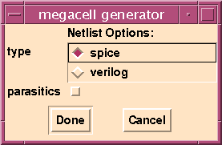

MCC MegaCell Compiler Tutorial |
Part 4
Netlisting
Overview
- Once you have built a megacell, you must verify it. Furthermore, a netlist (typically in SPICE format) of the megacell must be provided with the layout for higher level or full-chip LVS. Otherwise, even if the megacell by itself is perfect and connected correctly to the surrounding circuitry, the chip might not work because someone accidentally ran a wire over it and shorted part of it out.
- MCC enables you to extract a netlist directly from the megacell layout, and verify the megacell from that netlist. This eliminates the time-consuming task of creating a full schematic of the megacell and iterating with LVS to verify that the schematic and layout are the same.
SPICE Netlist
- MCC creates a two-level SPICE netlist (leaf cells and top level netlist) of your megacell by executing the
MC Netlistcommand and selecting theSPICEoption. The netlist contains a top levelsubcktcall, which instantiates all of the leaf cells and inserts loads on all of the top level nets. Each leaf cell also has asubcktdefinition that includes loads on all nets except for I/O's, since these are included in the top levelsubckt. A leaf cell is defined as a cell that contains a transistor or transistor cell (gcell).
- In this exercise, we will create a SPICE netlist for an SRAM. First, let's generate an SRAM of a different size.
- Select
MC Buildfrom theToolmenu and setROWSto16andCOLSto32, which will create an 128x4 SRAM.
- Select
MC Netlistfrom theToolmenu
- When the popup form appears, as shown in Figure 29, click on the
spicetoggle button and clickDone.
- If you are going to use the SPICE netlist for LVS purposes, you do not want to output parasitics.
Figure 29: MC Netlist Popup Form

Verilog Netlist
- You can also extract a Verilog netlist from your MCC layout. This Verilog netlist can be used for functional verification of the megacell. For example, if you have created an SRAM, you want to insure that each memory cell is uniquely addressed and that there are no unwanted sign inversions.
- If the chip that this megacell is going into is verified in Verilog, you can also substitute this extracted Verilog model for the behavioral model used in simulation and verification of the entire chip. Although the extracted model is much slower than the behavioral model to simulate, it allows you to verify the desired megacell functionality. Often megacells, such as memories, are black-boxed manually, which provides a likely spot for errors if you cannot verify the actual megacell.
- Let's create a Verilog netlist for our SRAM.
- This is a manually created test file for a larger SRAM. If you want to generate a Verilog netlist to run with this test Verilog file, generate a new SRAM with
ROWSset to16andCOLSset to64. Then, generate a Verilog netlist forMMI_SRAM_128X64. This will take a little while. TheVerilog.logfile shows the results of running Verilog simulation on this file.
- Most of the behavioral models are very simple.
Summary
- You have completed the following tasks:
- MCC is a very powerful tool for building all types of regular structures. It has many powerful features to assist in memory analysis. Additionally, MCC makes it much easier to port a design to a new process.
- For more details on how to use MCC, refer to the MCC Manual.
| ----- Micro Magic ----- |